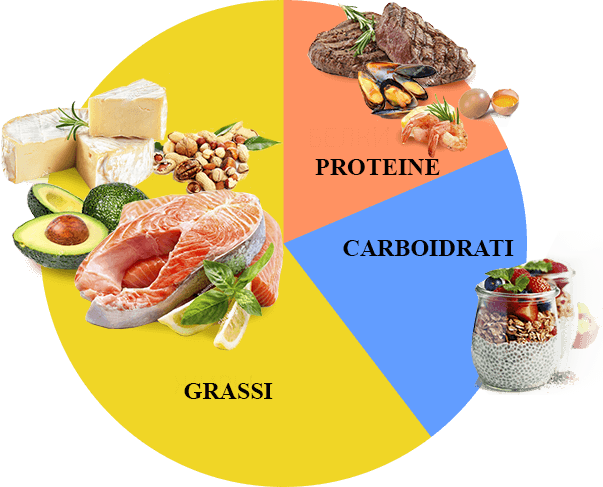

«Da quando ho memoria, sono a dieta. La fame per me è sempre stata un problema, soprattutto perché mi rovinava il sonno. Riuscivo anche a dimagrire, ma poi mi mangiavo qualsiasi cosa trovavo. KETO DIET mi è stato raccomandato dal dietologo. Ho notato praticamente subito i risultati. Ogni settimana se ne andavano 3 kg. Praticamente una magia. Mi sentivo benissimo, non avevo fame, e dormivo 7 ore»
Isabella N, 27 anni

«Per me, KETO DIET è stato una salvezza. Non avevo mai pensato di poter mangiare tutto ciò che amo e allo stesso tempo perdere peso. Il fatto è che ho sempre avuto un eccesso di carboidrati nella mia dieta. Ciò comportava un peso di ben 100 kg a 29 anni. In generale, non appena ho leggermente modificato la quantità di carboidrati, il peso ha iniziato a diminuire. Ma non posso vivere senza carboidrati, perché amo davvero il fast food. Poi ho scoperto KETO DIET. Dopo aver provato questo rimedio, il processo di combustione del grasso in eccesso è andato molto più veloce e non ho nemmeno dovuto rinunciare ai carboidrati. In totale, in 4 mesi ho perso 25 kg. KETO DIET è spettacolare! Lo consiglio a tutti!»
Marco V, 49 anni

«Sappiamo veramente poco sul nostro organismo. Non immaginavo neanche quanti processi complessi esistessero, finché non sono stata dal dietologo e non ho scoperto la chetosi. Sono pigra. Non riesco a stare a dieta, tantomeno a fare sport. Proprio per questo cercavo qualcosa di facile e rapido. Su KETO DIET posso dire solo una cosa, va preso! Con l'aiuto di questo preparato sono riuscita a perdere 15 kg, un record, ed ora ho una silhouette ideale»
Marta Veronesi 34 anni